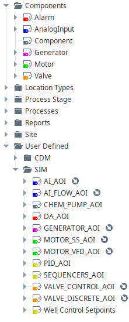

SCADA 2.x
This is a new major version of the American Water Ignition HMI SCADA framework. In line with the semantic versioning principles, this release has breaking changes and is not backwards compatible with version 1.x. While this version is intended for new projects, some features can be incorporated into version 1.x projects on a case-by-case basis.
Highlights
Views and Navigation
View development significantly reduced
For the previous version, a
Mobile, Tablet, Desktop, and Overview Widget view had to be
developed for every location. With this version, the P&ID view is
the only required view that needs to be
developed and only for process locations. See image below for
an example view structure. Note also that any type of view can
easily be overridden with a custom view by placing that view in the
appropriate location folder. For example, if a developer would like to
create a custom mobile view for a certain location, they just create
a view call Mobile in that location's folder and that view will be
used at runtime. Not only does this feature speed up development
time, it also helps ensure consistency within a project and across
multiple projects. It also makes maintenance easier since there will
be significantly fewer views to maintain.
Navigation is now URL based
URL navigation allows multiple tabs and windows on the same device to behave independently. The browser back and forward buttons will work as expected. Also, any location view can be bookmarked by the user.
Navigation performance significantly improved
For the previous version, before a view can be rendered, the location details had to be retrieved from the database. Not only did this slow responsiveness but the entire SCADA HMI would be unusable if the connection to the database was lost. Now the location details can be retrieved from a session property in constant time (the fastest complexity time possible) with no scripting overhead. This also allows more computationally complex details like tag path and children locations to be cached at build-time.
UDTs and Tags
UDT inheritance
UDT inheritance allows developers to override properties of the core UDTs without breaking their respective symbol/faceplate views. This also allows the developer to setup multiple UDTs of a similar type but for different AOIs. For example, a developer can setup a VFD UDT and a Soft-Start UDT that inherent from the same Motor UDT and use the same symbol and faceplate. This also makes maintenance easier since there will be less core UDTs, symbols and faceplates to maintain. See image below of a UDT structure using inheritance.

UDT parameters
Effective use of UDT parameters speeds up development and reduces bugs. For example,
a parameter called opcPrefix can be used to map a PLC AOI's atomic tags to a UDT's atomic tags with
a binding like {opcPrefix}.Running for a motor running status. Similar for alarms, parameters called
locationName and componentName can be used to create consistant alarm descriptions with the
binding {locationName} {componentName} {alarm}.
UDT custom properties
UDT custom properties are used by the HMI framework to automate overview displays, mobile views,
trending pens, etc ... Any UDT that inherits from the core UDT Components/Component will get
these custom properties and will be considered a "component" by the HMI framework. These custom
properties allow the developer to tweak the behavior of the HMI framework without needing to modifying any of
the backend scripting. See image below of the Motor UDT.
Faceplates and Docks
Faceplate skeleton refactored
Faceplate skeleton was refactored to improve performance and customizability. Originally, there was scripting to figure out which tab view to render based on the UDT type. This decreased performance and a developer would have to update the scripting in multiple places to add a new faceplate or update a tab view. Now, which view to render comes from a custom property within the UDT (see image below). This means developers can now easily add, edit and remove tab views for core and user defined UDTs.
Form templates
Form templates have been added to speed up development, improve maintainability, and ensure consistency when developing faceplates and docks. Most forms consist of a list of rows where each row consists of a label, an input/output form, and possibly units. Developers no longer have to do the tedious work of lining up rows, enforcing security, creating read/writing tag bindings, and adding the correct style classes. This is taken care of in the form templates. Also, maintenance is much easier since only a few places need to be updated to update every faceplate/dock that uses form templates. See image below of a custom dock made using form templates.
Performance Enhancements
Tag groups
All the core UDTs now use tag groups. One of the biggest demands on the server is tag polling. Not all tags need to be polled at the same rate. Analog values, alarm statuses, and control tags can be polled at a higher rate, while the poll rate can be turned down for other tags. Also, leased tags can be set to poll at a faster rate when the tags are being displayed and a slower rate when they are not.
Alarm scanning
Every view component, that has an alarm associated with it, needs to scan for active children alarms.
Originally, every component called
the Ignition built-in function system.alarm.queryStatus() which does a global alarm scan and can be
computationally expensive. To quote the Ignition manual:
Note
Depending on the number of alarm events in the system, this function can be fairly intensive and take a while to finish executing. This can be problematic if the application is attempting to show the results on a component (such as using this function to retrieve a count of alarms). In these cases it's preferred to call this function in a gateway script of some sort (such as a timer script), and store the results in a tag.
Now this function is only called once for every alarm scan. The components still need to query for children
alarms, but this only happens if there is a new alarm in the system and the query is just a linear search on
the cached ActiveAlarms dataset tag.
Reduced script transforms
Unnecessary script transforms have been removed from core component symbols. While script transforms are very powerful, they should be avoided for highly used components to improve responsiveness. It's not that the script itself is slower than other types of transforms (it's compiled to java on the backend). It's the overhead of the Remote Procedure Call (RPC) that Ignition has to do to get the results of the script from the gateway that slows the responsiveness. Other, simpler transforms, can be executed by javascript within the browser, thus improving responsiveness.
New and Updated Tools
New Ad Hoc Reporting Tool
Developing reports can be difficult and time consuming. This tool has a set of user customizable reports that are typically used at water/wasterwater plants. Currently these include flow totals, equipment runtimes and cycles, instrument value snapshots with previous 24 hour statistics, equipment state snapshots with previous 24 hour statistics, and tank volume usage reports. See a sample report below.
These are ad hoc in the sense that the operator can select what tags are included in a report, the order of the tags, the units and the significant figures. They can also set up conditional highlighting which will highlight a value if it is above or below a user defined setpoint. This can be useful for alerting operators when a piece of equipment is due for routine maintenance. Scheduled actions can also be created/edited by the operator, like daily file-save and/or email actions.
Updated Ad Hoc Alarm Notification Tool
Configuring custom alarm rosters/pipelines in Ignition can also be difficult and time consuming. First, setting up a custom alarm roster/pipeline usually involves configuring pipeline block diagrams and some scripting. Second, Ignition notification pipelines are geared toward using bulk rosters that require setting up each individual's schedule. The Ad Hoc Alarm Notification tool uses dynamic single person rosters that can to do "escalation" or "blast" notifications. It's much easier for an operator to quickly add/remove themselves from a dynamic roster than to constantly maintain their schedule. Also, minimum alarm priority, source path filters, and start-end times can all be configured for each roster without having to touch a pipeline block diagram or scripting.
Updated Ad Hoc Trending Tool
The Ad Hoc Trending tool has been updated to improve user experience. First, the UI has been simplified and geared more toward operator use-cases.
Also, there is a new trend picker tool that is based on the location model. This gives operators quick access to the most used trends without having to dig though a complicated tag structure. It also separates the tag types and puts them in different plots by default. This new trend picker tool requires little to no setup by the developer.
Improved Resources
Simulated Project
The new start-up kit includes a fully simulated example project showing the newer techniques of 2.x. This gives developers a example project (although much simpler than a real world project) to help them get started on new projects. Currently, it's a very simple ground water system but more complicated processes/components can be added over time.
Improved Documentation and Videos
Currently under development. All documentation, videos and resource links on a single website like this example?
Git Integration?
This will let developers see every change made in templates, when it was changed, what exactly was changed, and who changed it. Plus, they can easily report bugs, request new features and even contribute through pull requests. Needs some more configuring/testing to improve user experience (f***ing resource files) but very promising!